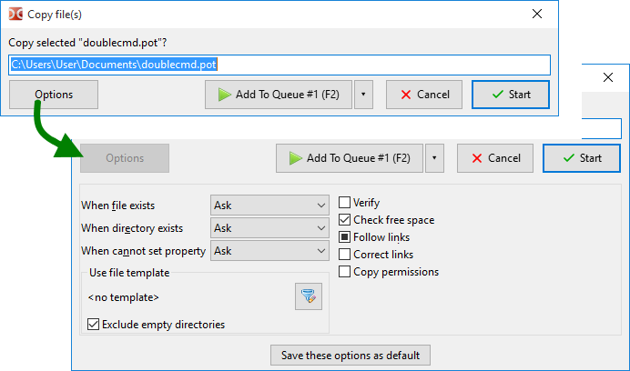

Bestätigungsfenster zum Kopieren oder Verschieben von Dateien, in dem sich einige Parameter ändern lassen. Die Fenster für beide Vorgänge unterscheiden sich nur in wenigen Parametern und werden deshalb gemeinsam beschrieben.

Es lässt sich mit den Tasten F5 (Kopieren), Shift+F5 (im selben Verzeichnis kopieren) und F6 (Verschieben), mit Schaltflächen auf der Leiste der Funktionstasten oder mit internen Befehlen aufrufen (cm_Copy, cm_CopySamePanel und cm_Rename). Dieses Dialogfenster erscheint außerdem, wenn wir Dateien ziehen und ablegen (wenn Bestätigungsdialog nach dem Ablegen anzeigen aktiviert ist).
Das Fenster zeigt ein bearbeitbares Feld mit dem Zielverzeichnis und einer Dateimaske (oder einem Dateinamen, wenn es nur eine Datei ist). Wir können Zielpfad und Dateinamen manuell ändern. Mit F5 oder F6 können wir die Auswahl in dieser Reihenfolge umschalten: Basisdateiname, Dateiname, Erweiterung, Pfad, alles. Ist kein Zielverzeichnis angegeben (cm_CopySamePanel oder manuelle Bearbeitung), werden die Dateien in das Quellverzeichnis kopiert.
Die Dateimaske legt fest, wie Dateien beim Kopieren oder Verschieben umbenannt werden (das Zeichen „*“ steht für eine beliebige Anzahl von Zeichen, das Zeichen „?“ für genau ein Zeichen). Zum Beispiel können wir *.*.bak angeben, um allen kopierten Dateien die Erweiterung .bak hinzuzufügen. Mit *.ext können wir die Erweiterungen aller kopierten Dateien durch ext ersetzen. Oder wir verwenden zum Beispiel ????.* und kürzen die Namen auf die ersten vier Zeichen. Zeichen vor *.* ersetzen Zeichen im Namen (beginnend beim ersten Zeichen). Ist die Maske nicht anwendbar, bleiben die Namen unverändert.
Mehrere Schaltflächen:
Starten und Abbrechen – starten oder brechen den Vorgang ab.
Zur Warteschlange hinzufügen – fügt eine Aufgabe zur Warteschlange der Dateivorgänge hinzu. Das ist praktisch, wenn wir mehrere Aufgaben gleichzeitig ausführen: Wir können die Reihenfolge der Vorgänge in der Warteschlange ändern, eine Aufgabe anhalten oder pausieren. Das Fenster mit der Liste der Dateivorgänge lässt sich auf zwei Arten aufrufen: über den Eintrag Operationsanzeige im Menü Ansicht oder mit Alt+V (interner Befehl cm_OperationsViewer).
Optionen – klappt zusätzliche Optionen auf.
Die erste Optionsgruppe legt die Aktion fest, die bei einem Namenskonflikt oder wenn Dateieigenschaften nicht gesetzt werden können, ausgeführt wird:
Wenn die Datei vorhanden ist – Wenn im Zielverzeichnis bereits eine Datei mit demselben Namen vorhanden ist. Aktionen: Fragen, Überschreiben, Ältere überschreiben, Überspringen.
Wenn das Verzeichnis vorhanden ist – Wenn im Zielverzeichnis bereits ein Ordner mit demselben Namen vorhanden ist. Aktionen: Fragen, Zusammenführen, Überspringen.
Wenn Eigenschaften nicht gesetzt werden können – Was geschehen soll, wenn Dateizeit, Attribute und Ähnliches nicht gesetzt werden können, zum Beispiel wegen Einschränkungen des Dateisystems im Zielverzeichnis. Aktionen: Fragen, Nicht mehr setzen, Fehler ignorieren.
Fragen (standardmäßig) bietet weitere mögliche Aktionen (siehe unten).
Die nächste Gruppe ist ein Filter, mit dem sich festlegen lässt, welche Dateien kopiert oder verschoben werden (Dateimasken, Alter und so weiter). Hier sehen wir die ausgewählte Vorlage und:
Die Schaltfläche Vorlage wählen ( ) öffnet ein Fenster mit einer Liste gespeicherter Vorlagen und der Möglichkeit, eine neue hinzuzufügen.
) öffnet ein Fenster mit einer Liste gespeicherter Vorlagen und der Möglichkeit, eine neue hinzuzufügen.
Leere Verzeichnisse ausschließen – Wenn aktiviert, werden nur nicht leere Verzeichnisse kopiert oder verschoben. Wirkt nur mit Vorlagen.
Die Liste der folgenden Parameter hängt von der Art des Dateivorgangs und der Betriebssystemfamilie ab.
Prüfen – Wenn aktiviert, vergleicht Double Commander die Quelldatei und die kopierte Datei im Zielverzeichnis: ein byteweiser Vergleich (Windows) oder Prüfsummen (Linux und andere: BLAKE3 (x86-64), BLAKE2b (andere 64-Bit-Prozessoren) oder BLAKE2s). Double Commander versucht, die Auswirkungen des Festplattenzwischenspeichers zu verringern (unterstützt das Dateisystem keine direkte Ein-/Ausgabe, meldet das Programm einen Fehlschlag der Prüfung). Zu beachten ist, dass diese Funktion die Geschwindigkeit des Vorgangs deutlich verringert. Jede Datei wird zweimal gelesen, deshalb verdoppelt sich die Gesamtgröße der Dateien in der Fortschrittsanzeige. Unter macOS ist diese Funktion experimentell verfügbar.
Freien Speicherplatz prüfen – Vor dem Kopieren der Datei prüft Double Commander, ob im Zielverzeichnis genug freier Speicherplatz vorhanden ist.
Speicherplatz reservieren – Wenn aktiviert, reserviert Double Commander den Speicherplatz im Voraus. Das verringert die Wahrscheinlichkeit einer Dateifragmentierung. Außerdem werden Dateien so schneller angelegt. Unter Windows reserviert Double Commander den Speicherplatz immer. Unter Linux funktioniert das auf Partitionen mit dem Dateisystem FAT32 nicht.
Verknüpfungen folgen – Wenn aktiviert, behandelt Double Commander symbolische Verknüpfungen auf Ordner als gewöhnliche Ordner und kopiert ihren Inhalt; statt Dateiverknüpfungen werden die Zieldateien dieser Verknüpfungen kopiert. Unbestimmter Zustand des Kontrollkästchens (drei Zustände): Das Programm fragt jedes Mal, was es tun soll.
Verknüpfungen korrigieren – Wenn aktiviert, prüft Double Commander die Verknüpfungen und korrigiert bei Bedarf ihren Zielpfad anhand des Zielverzeichnisses. Ist ein relativer Pfad angegeben, wird auch der korrigierte Pfad relativ geschrieben.
Attribute kopieren – Wenn aktiviert, werden die Attribute der Quelldatei kopiert, andernfalls werden die Standardwerte für den aktuellen Benutzer verwendet, üblicherweise 664 (Dateien) oder 775 (Ordner). Siehe auch die Beschreibung von <CopyXattributes>. Für Windows: siehe die Beschreibung von <CopyAttributes>.
Schreibschutzattribut entfernen – Wenn aktiviert, fügt Double Commander das Attribut „w“ hinzu (Linux).
Datum/Uhrzeit kopieren – Wenn aktiviert, wird das Änderungsdatum der Quelldatei kopiert, andernfalls wird das aktuelle Datum verwendet. Für Windows: siehe die Beschreibung von <CopyTime>.
Besitzer kopieren – Wenn nicht aktiviert, ist der Besitzer der Benutzer, in dessen Namen das Programm gestartet wurde.
Berechtigungen kopieren – ermöglicht das Kopieren von Berechtigungen, die für das Dateisystem NTFS gelten; andernfalls werden die Rechte des aktuellen Benutzers verwendet (des Benutzers, in dessen Namen das Programm gestartet wurde). Nur Windows.
Kopieren beim Schreiben (nur Linux) – Unterstützung für eine Funktion des Dateisystems Btrfs: Standardmäßig verwendet Btrfs für alle lokalen Dateien das Prinzip des Kopierens beim Schreiben (Copy-on-Write, COW). Ist die Option aktiviert, das Kopieren beim Schreiben aber nicht verfügbar, fordert Double Commander dazu auf, das Kopieren der Dateien zu überspringen oder den Vorgang abzubrechen. Bei Bedarf ist der unbestimmte Zustand des Kontrollkästchens (drei Zustände) sicherer: Wenn möglich, werden Datenblöcke nur bei einer Änderung kopiert, andernfalls erfolgt ein gewöhnliches Kopieren (wie bei der Verwendung von „cp --reflink=auto“).
Hinweis: Beim Kopieren von Dateien aus Archiven ist nur der Parameter Wenn die Datei vorhanden ist verfügbar. Beim Kopieren von Dateien aus Dateisystem-Plugins (WFX) stehen mehrere Parameter zur Verfügung: Wenn die Datei vorhanden ist, Datum/Uhrzeit kopieren und Im Hintergrund arbeiten (eigene Verbindung). Der letzte Parameter verhindert, dass das Fortschrittsfenster des Dateivorgangs das Hauptfenster von Double Commander blockiert.
Diese Optionen als Standard speichern – übernimmt die aktuellen Werte als Vorgabe für die nächsten Kopier- und Verschiebevorgänge.
Eine weitere Möglichkeit, Dateien zu kopieren oder zu verschieben: Wir können die Befehle Kopieren und Einfügen oder Ausschneiden und Einfügen über die Tastatur (standardmäßig Ctrl+C/Ctrl+V oder Ctrl+X/Ctrl+V) oder die entsprechenden Einträge im Kontextmenü verwenden.
In diesem Fall startet der Vorgang ohne Bestätigungsdialog. Double Commander verwendet die als Standard gespeicherten Vorgangseinstellungen, mit Ausnahme des Parameters Prüfen (siehe Beschreibung oben).
Wird eine Datei kopiert und in das aktive Panel eingefügt (im selben Verzeichnis), werden Duplikate mit automatischer Umbenennung anhand der Vorlage aus den Einstellungen der Dateioperationen erzeugt.
Dieses Dialogfeld zeigt die Einzelheiten zum Fortschritt des Vorgangs: zwei Fortschrittsbalken (für die aktuell bearbeitete Datei und den Gesamtvorgang), den Fortschritt in Prozent (in der Titelleiste), die Gesamtzahl der Dateien und die Zahl der bearbeiteten Dateien, den vollständigen Namen der aktuellen Datei und den Namen im Zielverzeichnis, Größe, Geschwindigkeit und verbleibende Zeit.
Schaltflächen:
Pause/Fortsetzen – ermöglicht, den Vorgang anzuhalten oder fortzusetzen.
Abbrechen – bricht den Vorgang ab und schließt das Dialogfeld.
Ins Panel – verkleinert dieses Dialogfeld zum Panel der Dateivorgänge.
Alle anzeigen – ruft das Fenster Operationsanzeige auf.
Wenn im Zielverzeichnis bereits eine Datei mit dem Namen der zu kopierenden Datei vorhanden ist, bietet Double Commander mehrere Aktionen an. Die Wahl der Aktion, die automatisch (ohne Eingriff des Benutzers) verwendet werden soll, wird für spätere Aufrufe des Kopier- oder Verschiebevorgangs nicht gespeichert.
Wenn ein Ordner mit demselben Namen vorhanden ist:
Zusammenführen – Der Inhalt des Ordners wird in den gleichnamigen Ordner im Zielverzeichnis kopiert.
Alle zusammenführen – Dasselbe wie zuvor wird bei späteren Namenskonflikten automatisch verwendet.
Überspringen – Double Commander kopiert diesen Ordner nicht.
Alle überspringen – Dasselbe wie zuvor wird bei späteren Namenskonflikten automatisch verwendet.
Wenn eine Datei mit demselben Namen vorhanden ist:
Überschreiben – Der Inhalt der Datei im Zielverzeichnis wird durch den Inhalt der Datei aus dem Quellverzeichnis ersetzt.
Alle überschreiben – Dasselbe wie zuvor wird bei späteren Namenskonflikten automatisch verwendet.
Alle älteren überschreiben – Automatisch ersetzt werden nur Dateien, die nach dem Änderungsdatum älter sind.
Überspringen – Double Commander kopiert diese Datei nicht.
Alle überspringen – Dasselbe wie zuvor wird bei späteren Namenskonflikten automatisch verwendet.
Umbenennen – Double Commander zeigt ein Dialogfeld mit einem Eingabefeld, und wir können den Dateinamen aus dem Quellverzeichnis sofort manuell ändern.
Fortsetzen – Ist die Zieldatei kleiner als die Quelldatei oder leer, wird die Differenz an das Ende der Zieldatei angehängt. Das kann bequemer und schneller sein, wenn zum Beispiel ein Download oder ein Kopiervorgang durch einen Programmabsturz abgebrochen wurde und die Quelldatei von einem anderen Ort stammt. Diese Funktion ist nicht verfügbar, wenn Speicherplatz reservieren aktiviert ist.
Andere – Menü mit weiteren Aktionen:
Nach Inhalt vergleichen – ruft den Befehl Nach Inhalt vergleichen auf.
Anhängen – Der Inhalt der Datei wird an das Ende der Datei im Zielverzeichnis angehängt.
Alle kleineren überschreiben – Automatisch ersetzt werden nur kleinere Dateien.
Alle größeren überschreiben – Automatisch ersetzt werden nur größere Dateien.
Quelldateien automatisch umbenennen – Double Commander benennt die Dateien, die wir kopieren, automatisch anhand der Vorlage aus den Einstellungen der Dateioperationen um.
Zieldateien automatisch umbenennen – Wie zuvor, aber umbenannt werden die Dateien im Zielverzeichnis.
Die Schaltfläche Abbrechen bricht den Vorgang ab.
Weitere Optionen zu Kopier- und Verschiebevorgängen stehen auf der Einstellungsseite Dateioperationen.